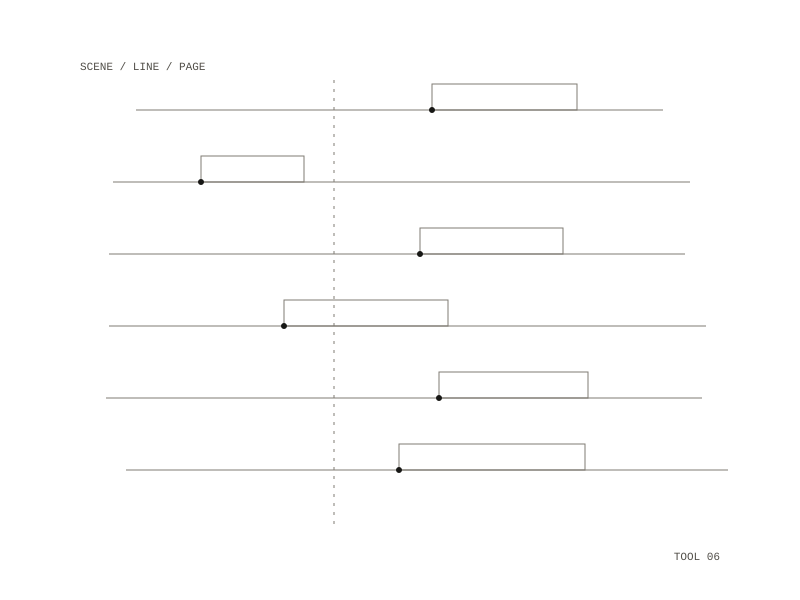

Screenplay Formatter
Turns a screenplay typed as plain text into a properly laid-out Word file
A small converter that takes a screenplay written as a plain text file and produces a properly formatted screenplay Word file, matching the standard US layout of a reference PDF: title page, scene headings, centred character cues, indented dialogue and right-aligned transitions.

Layout only
The converter changes layout and never content, and blank lines in the source are kept.
Seven kinds of line
Every line of the source becomes exactly one screenplay element (scene heading, character cue, parenthetical, dialogue, action, transition or a kept blank line) by explicit rules plus a small table of exceptions, so the same text always comes out the same way. A line in brackets is a parenthetical only directly under a character cue; the lines the rules cannot safely tell apart, such as a bracketed aside that is really a stage direction, are named one by one in the exceptions table.
The page
Courier New 12 point on US Letter, with a 1.5 inch left margin and 1 inch elsewhere. Dialogue is indented 1.0 inch, parentheticals 1.6 inches and character cues 2.2 inches; transitions sit flush right, and scene headings and action run flush left. The page-break markers of a printed script, (MORE) and (CONT'D), are left out, because Word reflows the text.
Use
Drop the text file into the input folder, run one make command, and the Word file appears in the output folder under the same name. Docker, Make and git are the only requirements.
- Year
- 2026
- Medium
- software / text / film
- In
- a screenplay as plain text
- Out
- a .docx in standard US screenplay layout
- Repository: private